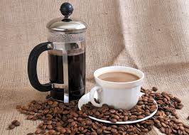

Featured Products
Hous Blend Coffee

As a beverage, espresso is a
concentrated form of coffee brewed with high pressure,
hot water and finely ground coffee beans.
Espresso is thicker than
regular coffee and has a layer of “crema” on top,
which results from air bubbles mixing with the coffee's oils
Detalis
French Press

A coffee press, sometimes called a French press or plunger pot,
is often hailed by coffee
enthusiasts as the best method for brewing coffee. It's one of the few brewing
methods that allows all the
natural oils and proteins in the grounds to be present in the final cup
Detalis